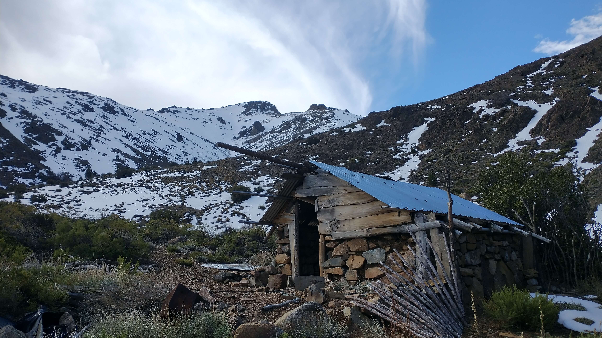
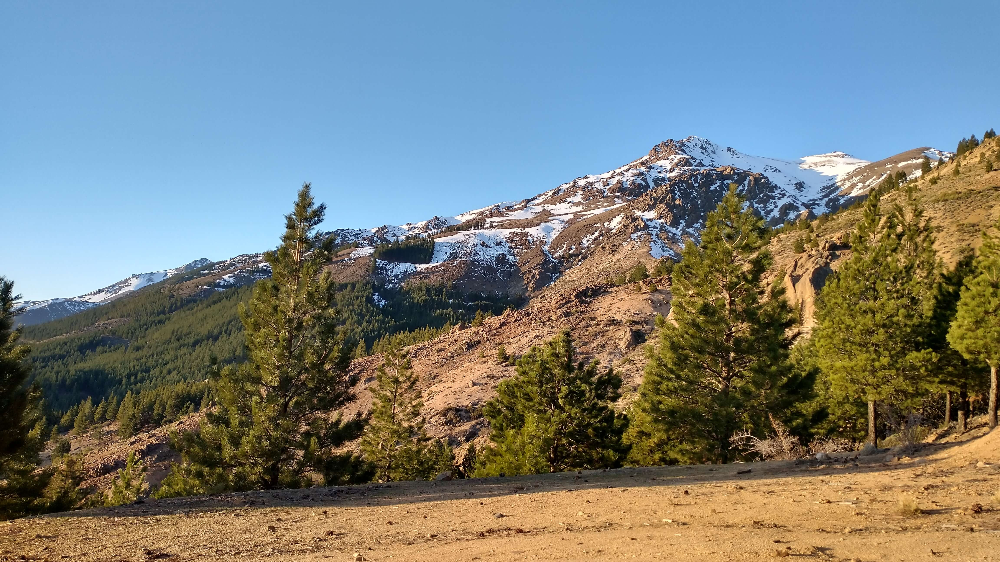

CONOCE LAS
JOYAS DE HUINGÁNCÓ

Dificultad: Baja
Altura: 1600.msnm
Mirador San Pedro
Arrancamos en el pueblo de huinganco con una subida de 30-40 minutos, que nos deleita con una de las mejores vistas del Lugar, desde la sima se puede avistar, el cerro corona, andacollo, la cordillera andina y la cordillera del viento

Dificultad: Media
Altura: 1300.msnm
Sendero Pino Huacho
El sendero comienza por los bosques de pinos, todo en subida hasta el mirador pino Huacho , donde tendremos una vista unica de la zona.
Siguiendo el camino bordearemos la montaña hasta encontrar un refugio y regresaremos descendiendo por otra montaña

Dificultad: Alta
Altura: 2983.msnm
Cerro Corona
La corona del pueblo, aunque esta no es, ya que la foto es del Frey, igualmente lindo, y al menos tenemos foto